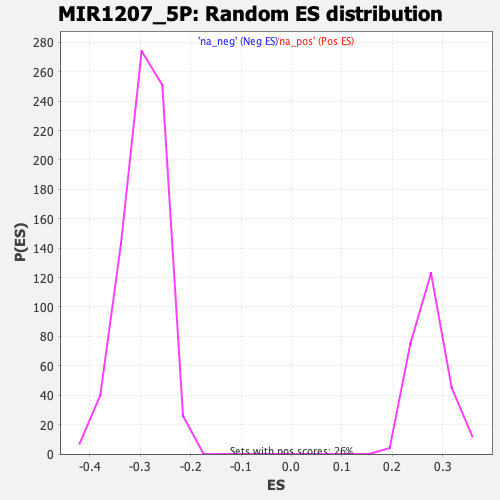

| | | Dataset | DE_genes |
| Phenotype | NoPhenotypeAvailable |
| Upregulated in class | na_neg |
| GeneSet | MIR1207_5P |
| Enrichment Score (ES) | -0.48877037 |
| Normalized Enrichment Score (NES) | -1.6654124 |
| Nominal p-value | 0.0 |
| FDR q-value | 0.3490362 |
| FWER p-Value | 0.465 |
Table: GSEA Results Summary
 Fig 1: Enrichment plot: MIR1207_5P
Fig 1: Enrichment plot: MIR1207_5P
Profile of the Running ES Score & Positions of GeneSet Members on the Rank Ordered List
| PROBE | GENE SYMBOL | GENE_TITLE | RANK IN GENE LIST | RANK METRIC SCORE | RUNNING ES | CORE ENRICHMENT | | 1 | KCNE1 | | | 340 | 2.515 | -0.0112 | No |
| 2 | DCUN1D3 | | | 406 | 2.172 | -0.0058 | No |
| 3 | APOL6 | | | 424 | 2.052 | 0.0022 | No |
| 4 | G6PD | | | 432 | 2.002 | 0.0106 | No |
| 5 | VASP | | | 470 | 1.858 | 0.0164 | No |
| 6 | PML | | | 513 | 1.695 | 0.0212 | No |
| 7 | GTPBP2 | | | 545 | 1.602 | 0.0263 | No |
| 8 | WNT7B | | | 560 | 1.561 | 0.0323 | No |
| 9 | SLC9A8 | | | 645 | 1.383 | 0.0329 | No |
| 10 | TMEM229B | | | 887 | 0.994 | 0.0214 | No |
| 11 | CHAC1 | | | 889 | 0.993 | 0.0258 | No |
| 12 | ETV6 | | | 1030 | 0.819 | 0.0202 | No |
| 13 | GTDC1 | | | 1134 | 0.734 | 0.0167 | No |
| 14 | TAF12 | | | 1184 | 0.693 | 0.0165 | No |
| 15 | VAMP1 | | | 1290 | 0.618 | 0.0124 | No |
| 16 | CACNA2D1 | | | 1402 | 0.566 | 0.0076 | No |
| 17 | IL6ST | | | 1449 | 0.543 | 0.0070 | No |
| 18 | FOXN2 | | | 1486 | 0.524 | 0.0069 | No |
| 19 | MPZ | | | 1524 | 0.509 | 0.0068 | No |
| 20 | NAV3 | | | 1583 | 0.478 | 0.0051 | No |
| 21 | FXYD5 | | | 1694 | 0.435 | -0.0003 | No |
| 22 | GPSM1 | | | 1722 | 0.420 | -0.0002 | No |
| 23 | CLASP1 | | | 1733 | 0.414 | 0.0010 | No |
| 24 | TLN1 | | | 1811 | 0.387 | -0.0023 | No |
| 25 | TFE3 | | | 1869 | 0.363 | -0.0045 | No |
| 26 | MLLT6 | | | 2073 | 0.304 | -0.0165 | No |
| 27 | SIX5 | | | 2127 | 0.290 | -0.0187 | No |
| 28 | POU2F2 | | | 2170 | 0.275 | -0.0202 | No |
| 29 | SLC6A17 | | | 2276 | 0.248 | -0.0260 | No |
| 30 | DNMT3A | | | 2308 | 0.242 | -0.0270 | No |
| 31 | CHAD | | | 2376 | 0.229 | -0.0304 | No |
| 32 | EPHA10 | | | 2395 | 0.228 | -0.0306 | No |
| 33 | LFNG | | | 2642 | 0.183 | -0.0460 | No |
| 34 | ERF | | | 2643 | 0.183 | -0.0451 | No |
| 35 | SV2A | | | 2676 | 0.180 | -0.0465 | No |
| 36 | MNT | | | 2697 | 0.176 | -0.0470 | No |
| 37 | FSTL4 | | | 2713 | 0.175 | -0.0472 | No |
| 38 | DISP2 | | | 2771 | 0.165 | -0.0502 | No |
| 39 | SLC7A1 | | | 2983 | 0.142 | -0.0635 | No |
| 40 | NOVA1 | | | 3005 | 0.139 | -0.0643 | No |
| 41 | CNNM4 | | | 3126 | 0.128 | -0.0716 | No |
| 42 | DUXA | | | 3155 | 0.127 | -0.0729 | No |
| 43 | SLC45A4 | | | 3166 | 0.126 | -0.0730 | No |
| 44 | SH3KBP1 | | | 3183 | 0.125 | -0.0735 | No |
| 45 | UNC5A | | | 3208 | 0.121 | -0.0745 | No |
| 46 | WNT6 | | | 3273 | 0.116 | -0.0782 | No |
| 47 | MAP1B | | | 3561 | 0.095 | -0.0967 | No |
| 48 | JAKMIP3 | | | 3624 | 0.091 | -0.1004 | No |
| 49 | MAGT1 | | | 3706 | 0.087 | -0.1053 | No |
| 50 | CNIH2 | | | 3752 | 0.084 | -0.1079 | No |
| 51 | RAP1GAP | | | 3867 | 0.078 | -0.1151 | No |
| 52 | GATAD2B | | | 3882 | 0.077 | -0.1156 | No |
| 53 | ELFN2 | | | 3939 | 0.073 | -0.1190 | No |
| 54 | PAK3 | | | 3990 | 0.070 | -0.1220 | No |
| 55 | PIK3CG | | | 4110 | 0.064 | -0.1295 | No |
| 56 | ABCG4 | | | 4135 | 0.062 | -0.1308 | No |
| 57 | MRAP2 | | | 4202 | 0.058 | -0.1349 | No |
| 58 | KSR2 | | | 4225 | 0.057 | -0.1361 | No |
| 59 | CBX6 | | | 4320 | 0.052 | -0.1421 | No |
| 60 | TMA7 | | | 4373 | 0.049 | -0.1453 | No |
| 61 | SLC25A14 | | | 4392 | 0.048 | -0.1463 | No |
| 62 | BCAN | | | 4405 | 0.047 | -0.1468 | No |
| 63 | SSR3 | | | 4437 | 0.046 | -0.1487 | No |
| 64 | IPO9 | | | 4448 | 0.045 | -0.1491 | No |
| 65 | NGEF | | | 4524 | 0.040 | -0.1539 | No |
| 66 | FAM155B | | | 4631 | 0.035 | -0.1607 | No |
| 67 | PPP1R1A | | | 4636 | 0.035 | -0.1608 | No |
| 68 | SRC | | | 4656 | 0.034 | -0.1619 | No |
| 69 | ATP9B | | | 4668 | 0.033 | -0.1625 | No |
| 70 | F7 | | | 4831 | 0.025 | -0.1731 | No |
| 71 | GNAI2 | | | 4963 | 0.018 | -0.1816 | No |
| 72 | LDLRAD2 | | | 5027 | 0.014 | -0.1857 | No |
| 73 | SDK2 | | | 5072 | 0.012 | -0.1885 | No |
| 74 | ESRRG | | | 5120 | 0.010 | -0.1916 | No |
| 75 | CCL22 | | | 5136 | 0.010 | -0.1925 | No |
| 76 | SPR | | | 5142 | 0.009 | -0.1928 | No |
| 77 | SCN2B | | | 5213 | 0.006 | -0.1974 | No |
| 78 | NR6A1 | | | 5235 | 0.005 | -0.1988 | No |
| 79 | LSM12 | | | 5307 | 0.001 | -0.2034 | No |
| 80 | FA2H | | | 5366 | -0.003 | -0.2072 | No |
| 81 | DUSP15 | | | 5369 | -0.003 | -0.2074 | No |
| 82 | TMEM198 | | | 5394 | -0.004 | -0.2089 | No |
| 83 | RASL10B | | | 5433 | -0.006 | -0.2114 | No |
| 84 | SPNS2 | | | 5457 | -0.007 | -0.2129 | No |
| 85 | RAB43 | | | 5500 | -0.009 | -0.2156 | No |
| 86 | CD3EAP | | | 5682 | -0.019 | -0.2274 | No |
| 87 | ZNF285 | | | 5705 | -0.021 | -0.2288 | No |
| 88 | CDH1 | | | 5719 | -0.021 | -0.2296 | No |
| 89 | DPP8 | | | 5728 | -0.022 | -0.2300 | No |
| 90 | CHD5 | | | 5766 | -0.024 | -0.2323 | No |
| 91 | B3GNT7 | | | 5856 | -0.030 | -0.2381 | No |
| 92 | NIPSNAP1 | | | 5858 | -0.030 | -0.2380 | No |
| 93 | FOXM1 | | | 5866 | -0.030 | -0.2383 | No |
| 94 | CBX5 | | | 5868 | -0.030 | -0.2382 | No |
| 95 | TUBB4A | | | 5908 | -0.033 | -0.2407 | No |
| 96 | CPEB2 | | | 5987 | -0.038 | -0.2456 | No |
| 97 | SHB | | | 5997 | -0.039 | -0.2461 | No |
| 98 | GNA14 | | | 6088 | -0.045 | -0.2518 | No |
| 99 | KCNG1 | | | 6201 | -0.053 | -0.2589 | No |
| 100 | SF3A1 | | | 6311 | -0.060 | -0.2658 | No |
| 101 | DDX3X | | | 6348 | -0.062 | -0.2679 | No |
| 102 | GNAO1 | | | 6364 | -0.063 | -0.2686 | No |
| 103 | ABCC5 | | | 6477 | -0.071 | -0.2757 | No |
| 104 | SLC43A2 | | | 6547 | -0.075 | -0.2799 | No |
| 105 | RARA | | | 6548 | -0.075 | -0.2796 | No |
| 106 | DAGLA | | | 6570 | -0.077 | -0.2806 | No |
| 107 | CDH10 | | | 6727 | -0.090 | -0.2905 | No |
| 108 | ABHD4 | | | 6764 | -0.092 | -0.2924 | No |
| 109 | MYEOV | | | 6768 | -0.093 | -0.2922 | No |
| 110 | CDK5R1 | | | 6778 | -0.093 | -0.2924 | No |
| 111 | GPR137 | | | 6914 | -0.103 | -0.3008 | No |
| 112 | C5orf63 | | | 6917 | -0.104 | -0.3005 | No |
| 113 | MAPK8IP3 | | | 6923 | -0.105 | -0.3004 | No |
| 114 | CACFD1 | | | 6956 | -0.107 | -0.3020 | No |
| 115 | TMCC1 | | | 6992 | -0.110 | -0.3038 | No |
| 116 | NCKAP1 | | | 7009 | -0.111 | -0.3044 | No |
| 117 | PEF1 | | | 7035 | -0.113 | -0.3055 | No |
| 118 | GIT2 | | | 7143 | -0.122 | -0.3120 | No |
| 119 | KRT80 | | | 7153 | -0.123 | -0.3121 | No |
| 120 | USP4 | | | 7161 | -0.123 | -0.3120 | No |
| 121 | TNK2 | | | 7243 | -0.131 | -0.3167 | No |
| 122 | MARK2 | | | 7312 | -0.137 | -0.3206 | No |
| 123 | UBE2M | | | 7353 | -0.141 | -0.3226 | No |
| 124 | B4GALNT1 | | | 7524 | -0.154 | -0.3331 | No |
| 125 | SDC1 | | | 7568 | -0.159 | -0.3353 | No |
| 126 | CCDC170 | | | 7740 | -0.174 | -0.3457 | No |
| 127 | LRP1 | | | 7763 | -0.176 | -0.3464 | No |
| 128 | AKAP5 | | | 7960 | -0.194 | -0.3585 | No |
| 129 | TSPAN5 | | | 7975 | -0.196 | -0.3585 | No |
| 130 | FBXO41 | | | 7988 | -0.197 | -0.3584 | No |
| 131 | CHRM1 | | | 8066 | -0.205 | -0.3626 | No |
| 132 | SLC7A8 | | | 8093 | -0.208 | -0.3634 | No |
| 133 | LYST | | | 8101 | -0.208 | -0.3629 | No |
| 134 | NBPF3 | | | 8227 | -0.221 | -0.3702 | No |
| 135 | NOS1 | | | 8232 | -0.222 | -0.3694 | No |
| 136 | ZFP41 | | | 8250 | -0.223 | -0.3696 | No |
| 137 | KDM4B | | | 8291 | -0.229 | -0.3712 | No |
| 138 | WDTC1 | | | 8508 | -0.252 | -0.3843 | No |
| 139 | TP53I11 | | | 8582 | -0.260 | -0.3879 | No |
| 140 | SARM1 | | | 8696 | -0.274 | -0.3942 | No |
| 141 | GID4 | | | 8715 | -0.276 | -0.3941 | No |
| 142 | SLC35E2B | | | 8732 | -0.277 | -0.3939 | No |
| 143 | TTC5 | | | 8764 | -0.281 | -0.3947 | No |
| 144 | CBX2 | | | 8765 | -0.281 | -0.3935 | No |
| 145 | PCBP3 | | | 9204 | -0.335 | -0.4208 | No |
| 146 | C2orf72 | | | 9252 | -0.342 | -0.4224 | No |
| 147 | MPP2 | | | 9268 | -0.343 | -0.4219 | No |
| 148 | RBBP5 | | | 9315 | -0.349 | -0.4234 | No |
| 149 | SLC6A9 | | | 9363 | -0.354 | -0.4249 | No |
| 150 | SLC35E4 | | | 9387 | -0.357 | -0.4248 | No |
| 151 | CSRP1 | | | 9392 | -0.357 | -0.4235 | No |
| 152 | RAB1B | | | 9422 | -0.361 | -0.4238 | No |
| 153 | CD276 | | | 9494 | -0.373 | -0.4268 | No |
| 154 | SLC9A3R2 | | | 9591 | -0.386 | -0.4314 | No |
| 155 | NFIC | | | 9595 | -0.387 | -0.4299 | No |
| 156 | PHB | | | 9619 | -0.391 | -0.4297 | No |
| 157 | ADAMTS10 | | | 9759 | -0.411 | -0.4370 | No |
| 158 | MON1B | | | 9803 | -0.418 | -0.4380 | No |
| 159 | MAPK8IP1 | | | 9850 | -0.425 | -0.4391 | No |
| 160 | BRPF3 | | | 9851 | -0.425 | -0.4372 | No |
| 161 | ZMYM3 | | | 9865 | -0.427 | -0.4362 | No |
| 162 | NPTXR | | | 9895 | -0.431 | -0.4362 | No |
| 163 | OBSL1 | | | 9918 | -0.434 | -0.4357 | No |
| 164 | CORO2B | | | 9962 | -0.442 | -0.4366 | No |
| 165 | ETF1 | | | 9978 | -0.444 | -0.4356 | No |
| 166 | CAPN7 | | | 9986 | -0.445 | -0.4341 | No |
| 167 | PPP1R1B | | | 10081 | -0.458 | -0.4382 | No |
| 168 | CACNB3 | | | 10161 | -0.472 | -0.4413 | No |
| 169 | STIM1 | | | 10190 | -0.476 | -0.4410 | No |
| 170 | PRR15L | | | 10248 | -0.483 | -0.4426 | No |
| 171 | CRTC1 | | | 10331 | -0.496 | -0.4458 | No |
| 172 | DOLPP1 | | | 10356 | -0.499 | -0.4452 | No |
| 173 | EXOC7 | | | 10357 | -0.499 | -0.4430 | No |
| 174 | FAM120C | | | 10430 | -0.509 | -0.4455 | No |
| 175 | SMARCD1 | | | 10694 | -0.552 | -0.4603 | No |
| 176 | CCDC102A | | | 10702 | -0.553 | -0.4583 | No |
| 177 | LHPP | | | 10799 | -0.567 | -0.4621 | No |
| 178 | OPA3 | | | 10828 | -0.571 | -0.4614 | No |
| 179 | MEF2C | | | 10961 | -0.591 | -0.4675 | No |
| 180 | CIT | | | 11132 | -0.622 | -0.4759 | No |
| 181 | NACC1 | | | 11233 | -0.643 | -0.4797 | No |
| 182 | VAT1 | | | 11234 | -0.643 | -0.4768 | No |
| 183 | GOLGB1 | | | 11235 | -0.643 | -0.4740 | No |
| 184 | NBPF1 | | | 11330 | -0.663 | -0.4772 | No |
| 185 | STAG1 | | | 11441 | -0.686 | -0.4814 | No |
| 186 | CYP26B1 | | | 11442 | -0.686 | -0.4783 | No |
| 187 | CHPF | | | 11529 | -0.705 | -0.4809 | No |
| 188 | VANGL2 | | | 11559 | -0.710 | -0.4796 | No |
| 189 | CASC3 | | | 11571 | -0.714 | -0.4772 | No |
| 190 | UNC13D | | | 11615 | -0.724 | -0.4768 | No |
| 191 | ZMIZ1 | | | 11658 | -0.734 | -0.4763 | No |
| 192 | HBEGF | | | 11688 | -0.740 | -0.4749 | No |
| 193 | PLEC | | | 11697 | -0.741 | -0.4722 | No |
| 194 | ATRN | | | 11723 | -0.745 | -0.4705 | No |
| 195 | ZDHHC8 | | | 11729 | -0.747 | -0.4675 | No |
| 196 | UNK | | | 12053 | -0.815 | -0.4851 | Yes |
| 197 | KLF6 | | | 12090 | -0.825 | -0.4838 | Yes |
| 198 | GALNT2 | | | 12099 | -0.830 | -0.4807 | Yes |
| 199 | FUNDC2 | | | 12145 | -0.841 | -0.4799 | Yes |
| 200 | RHOJ | | | 12206 | -0.856 | -0.4801 | Yes |
| 201 | PDPK1 | | | 12282 | -0.873 | -0.4811 | Yes |
| 202 | AGAP1 | | | 12287 | -0.874 | -0.4775 | Yes |
| 203 | CDR2L | | | 12308 | -0.879 | -0.4749 | Yes |
| 204 | CRAT | | | 12406 | -0.905 | -0.4773 | Yes |
| 205 | ATP11A | | | 12443 | -0.915 | -0.4756 | Yes |
| 206 | BCL7B | | | 12448 | -0.915 | -0.4718 | Yes |
| 207 | FOXJ3 | | | 12462 | -0.919 | -0.4685 | Yes |
| 208 | ZNF740 | | | 12506 | -0.930 | -0.4672 | Yes |
| 209 | PBX1 | | | 12628 | -0.962 | -0.4709 | Yes |
| 210 | PTPN9 | | | 12680 | -0.974 | -0.4700 | Yes |
| 211 | SMYD5 | | | 12860 | -1.031 | -0.4772 | Yes |
| 212 | BAHD1 | | | 12887 | -1.041 | -0.4743 | Yes |
| 213 | HK1 | | | 12905 | -1.047 | -0.4707 | Yes |
| 214 | TMEM201 | | | 12914 | -1.050 | -0.4666 | Yes |
| 215 | STAT6 | | | 12916 | -1.051 | -0.4620 | Yes |
| 216 | MLST8 | | | 12943 | -1.059 | -0.4590 | Yes |
| 217 | SFXN5 | | | 13036 | -1.086 | -0.4602 | Yes |
| 218 | CABLES1 | | | 13075 | -1.098 | -0.4579 | Yes |
| 219 | TOB2 | | | 13092 | -1.103 | -0.4540 | Yes |
| 220 | SLC39A1 | | | 13121 | -1.111 | -0.4509 | Yes |
| 221 | CD151 | | | 13135 | -1.115 | -0.4468 | Yes |
| 222 | SLC35C2 | | | 13226 | -1.147 | -0.4476 | Yes |
| 223 | CAV1 | | | 13236 | -1.150 | -0.4431 | Yes |
| 224 | MTA3 | | | 13246 | -1.153 | -0.4386 | Yes |
| 225 | NFASC | | | 13293 | -1.172 | -0.4364 | Yes |
| 226 | PITPNM2 | | | 13440 | -1.227 | -0.4406 | Yes |
| 227 | SOGA1 | | | 13450 | -1.232 | -0.4357 | Yes |
| 228 | LRP4 | | | 13480 | -1.245 | -0.4321 | Yes |
| 229 | AXIN1 | | | 13523 | -1.263 | -0.4292 | Yes |
| 230 | NSMF | | | 13538 | -1.269 | -0.4245 | Yes |
| 231 | UBE2Z | | | 13558 | -1.279 | -0.4201 | Yes |
| 232 | LRRC15 | | | 13705 | -1.333 | -0.4238 | Yes |
| 233 | LENG8 | | | 13747 | -1.359 | -0.4204 | Yes |
| 234 | RXRA | | | 13776 | -1.371 | -0.4162 | Yes |
| 235 | DEF8 | | | 13833 | -1.393 | -0.4137 | Yes |
| 236 | MRGPRF | | | 13857 | -1.403 | -0.4090 | Yes |
| 237 | ZFYVE27 | | | 13886 | -1.418 | -0.4045 | Yes |
| 238 | KIF21B | | | 13919 | -1.434 | -0.4002 | Yes |
| 239 | ATG9A | | | 13929 | -1.436 | -0.3944 | Yes |
| 240 | PLXNA1 | | | 13939 | -1.438 | -0.3886 | Yes |
| 241 | MAFK | | | 13973 | -1.456 | -0.3843 | Yes |
| 242 | PGM5 | | | 13984 | -1.460 | -0.3785 | Yes |
| 243 | CCND3 | | | 14048 | -1.499 | -0.3760 | Yes |
| 244 | ATXN7L3 | | | 14070 | -1.513 | -0.3707 | Yes |
| 245 | RNF216 | | | 14118 | -1.547 | -0.3669 | Yes |
| 246 | ANGEL1 | | | 14122 | -1.549 | -0.3602 | Yes |
| 247 | NPTX1 | | | 14155 | -1.574 | -0.3553 | Yes |
| 248 | KIAA0513 | | | 14225 | -1.615 | -0.3527 | Yes |
| 249 | STK40 | | | 14379 | -1.703 | -0.3552 | Yes |
| 250 | AFAP1L1 | | | 14382 | -1.705 | -0.3477 | Yes |
| 251 | ITM2C | | | 14386 | -1.708 | -0.3403 | Yes |
| 252 | PACS2 | | | 14404 | -1.719 | -0.3338 | Yes |
| 253 | ASXL1 | | | 14450 | -1.753 | -0.3290 | Yes |
| 254 | VPS11 | | | 14483 | -1.776 | -0.3232 | Yes |
| 255 | MECP2 | | | 14507 | -1.793 | -0.3168 | Yes |
| 256 | ATG16L1 | | | 14529 | -1.809 | -0.3101 | Yes |
| 257 | TEAD3 | | | 14552 | -1.831 | -0.3034 | Yes |
| 258 | ARC | | | 14641 | -1.912 | -0.3007 | Yes |
| 259 | SLC25A23 | | | 14661 | -1.927 | -0.2934 | Yes |
| 260 | CDC42BPB | | | 14697 | -1.967 | -0.2870 | Yes |
| 261 | NAA60 | | | 14775 | -2.042 | -0.2830 | Yes |
| 262 | TRMT61A | | | 14782 | -2.050 | -0.2742 | Yes |
| 263 | TSPAN9 | | | 14785 | -2.051 | -0.2653 | Yes |
| 264 | TUBB6 | | | 14829 | -2.090 | -0.2588 | Yes |
| 265 | ORAI2 | | | 14840 | -2.096 | -0.2502 | Yes |
| 266 | PPTC7 | | | 14847 | -2.104 | -0.2412 | Yes |
| 267 | ZHX3 | | | 14856 | -2.110 | -0.2324 | Yes |
| 268 | SDC3 | | | 14862 | -2.122 | -0.2233 | Yes |
| 269 | ARRB1 | | | 14895 | -2.151 | -0.2158 | Yes |
| 270 | MEDAG | | | 14953 | -2.241 | -0.2096 | Yes |
| 271 | HYAL2 | | | 14959 | -2.251 | -0.1999 | Yes |
| 272 | ALS2CL | | | 15086 | -2.445 | -0.1974 | Yes |
| 273 | SSH2 | | | 15125 | -2.502 | -0.1887 | Yes |
| 274 | MLXIP | | | 15161 | -2.558 | -0.1797 | Yes |
| 275 | PPP3R1 | | | 15228 | -2.725 | -0.1719 | Yes |
| 276 | WBP1L | | | 15256 | -2.800 | -0.1612 | Yes |
| 277 | SH3PXD2B | | | 15265 | -2.829 | -0.1492 | Yes |
| 278 | MAPKAPK2 | | | 15312 | -2.988 | -0.1389 | Yes |
| 279 | NDRG1 | | | 15338 | -3.112 | -0.1268 | Yes |
| 280 | DCHS1 | | | 15363 | -3.297 | -0.1137 | Yes |
| 281 | MAFG | | | 15407 | -3.631 | -0.1004 | Yes |
| 282 | SEMA3F | | | 15424 | -3.894 | -0.0841 | Yes |
| 283 | NES | | | 15442 | -4.131 | -0.0669 | Yes |
| 284 | PDGFRB | | | 15447 | -4.465 | -0.0473 | Yes |
| 285 | ACVRL1 | | | 15463 | -5.045 | -0.0259 | Yes |
| 286 | FOSB | | | 15469 | -5.930 | 0.0001 | Yes |
Table: GSEA details [plain text format]

Fig 2: MIR1207_5P: Random ES distribution
Gene set null distribution of ES for MIR1207_5P